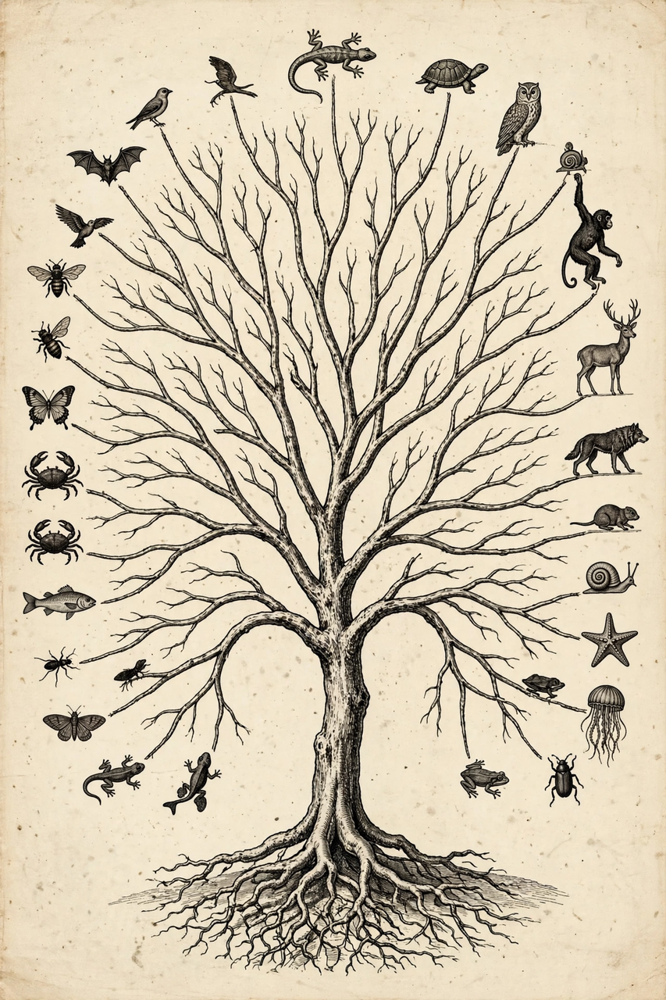

Evolution

[Image: a branching tree-of-life diagram radiating from a single root]Evolution is the change in the heritable characteristics of biological populations over successive generations. It occurs when evolutionary processes such as natural selection and genetic drift act on genetic variation, resulting in certain characteristics becoming more or less common within a population over successive generations. Evolutionary biology documents that all life on Earth is descended from a common ancestor that lived approximately 3.5–3.8 billion years ago.
History of the idea
Earlier thinkers from the Greeks to Lamarck proposed transmutation of species, but Charles Darwin and Alfred Russel Wallace (papers presented 1858; Darwin's On the Origin of Species in 1859) supplied the mechanism of natural selection and marshalled extensive evidence. Mendel's genetics, rediscovered in 1900, at first seemed a rival; the modern synthesis of the 1930s–40s fused genetics with selection. DNA's structure (1953) and later genomics supplied the molecular mechanism and a wealth of confirming evidence, from endogenous retroviruses to observed speciation.
Mechanisms and evidence
- Natural selection — heritable variants that aid survival/reproduction spread.
- Genetic drift, gene flow, mutation — chance, migration and new variation.
- Speciation — populations diverge into distinct species, observed in laboratory and field studies.
- Evidence — the fossil record (including transitional forms such as Tiktaalik and Archaeopteryx), comparative anatomy, biogeography (for example the fauna Darwin saw in the Galápagos), and molecular phylogenetics; syntheses appear in journals including Nature.
Outcomes
Evolution explains adaptation, biodiversity, extinction's reshaping of ecosystems, and practical phenomena such as antibiotic resistance and crop pests evolving pesticide tolerance — central concerns of medicine and agriculture, and of conservation in an age of climate change.